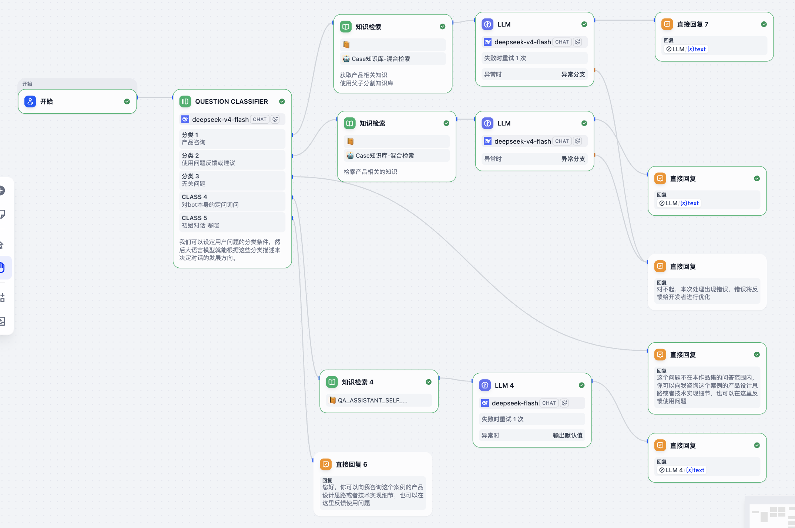
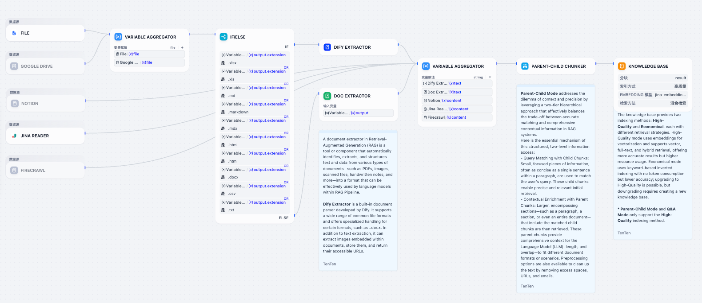

产品案例 · 已上线 · AI 产品设计CASE STUDY · PUBLISHED · AI PRODUCT DESIGN
Portfolio QA Assistant
让作品集自己回答读者的问题，但只允许它说有据可查的话。Let the portfolio answer for itself — but only from documents it can cite.
浏览作品集时，读者只能被动阅读项目截图，想追问某个设计背后的权衡、边界与取舍，却没有一个可以直接提问的入口。我在零后端的静态网站里嵌入了一个受限问答助手：访客可以直接提问，助手只能引用我已入库的项目文档作答，不能编造任何不存在的项目细节。这份案例讲的是如何定义这个问题、如何给 AI 划边界，以及每个取舍的代价。Browsing a portfolio means reading screenshots passively — there is no way to ask about the trade-offs, limits and reasoning behind a decision. I embedded a bounded Q&A assistant into a zero-backend static site: visitors can ask directly, but it may only answer from documents I have curated, and cannot invent project details that do not exist. This case is about framing the problem, setting the AI boundary, and the price of each trade-off.
线上真实界面THE PRODUCT IN PRACTICE

01 / 问题定义01 / PROBLEM DEFINITION
静态作品集能展示「做了什么」，答不了「为什么这样设计」。A static portfolio shows what was built, but cannot answer why.
不是单纯缺少聊天框，而是缺少一个可信入口：让面试官直接提问，同时保证回答不会编造我的项目经历。The gap is not a missing chat box. It is a missing trustworthy entry point: a recruiter can ask directly, and the answer will not invent my project history.
作品集首页是一份零依赖的单文件 HTML，能把项目、截图和数据摆得很清楚，却是单向的：招聘方想知道方案取舍，技术同行想问架构分层，读者想确认哪个案例真正上线。这些问题在页面里没有对话入口，只能靠留言或运气。The portfolio homepage is a dependency-free single HTML file. It presents projects, screenshots and metrics clearly, but it is one-way: a recruiter wants the reasoning behind a trade-off, an engineer wants the architecture layers, a reader wants to know which cases actually shipped. There is no place to ask — only a contact form or luck.
01 · 观察01 · Observe
需求线索来自作品集读者的三类提问：产品思路、技术实现、助手本身。这是基于访客视角的假设，不是量化用户调研，也不声称有人真的排队来问。The signal is three recurring question types from portfolio readers: product reasoning, technical implementation, and questions about the assistant itself. It is a visitor-perspective hypothesis, not a quantified user study, and no claim is made about measured demand.
02 · 定义问题02 · Frame
只解决一个判断：访客的提问能不能被路由到已入库的资料，并据此给出回答。没有资料就答不出，而不是让模型自由发挥。Solve one judgement: can a visitor's question be routed to an indexed document and answered from it? With no document there is no answer — the model must not improvise one.
03 · 找差异点03 · Differentiate
通用大模型可以很笃定地编出一段「项目复盘」。差异点在于：答案来自已发布知识流水线的检索结果，分类与检索配置都是可查的，而不是提示词里的一句「不要乱说」。A general LLM can produce a confident, fabricated "project retrospective". The wedge is that answers come from a published knowledge pipeline's retrieval results, and routing and retrieval settings are inspectable — not a polite "do not hallucinate" line in a prompt.
04 · 划边界04 · Constrain
限定域中文问答；不闲聊、不写作、不翻译；不回答未入库的项目细节；不承诺 100% 准确；不在前端放任何密钥。作品集项目本身的文档仍需单独整理入库。Domain-limited Chinese Q&A. No chit-chat, writing or translation. No answers about project details that were never indexed. No claim of 100% accuracy. No credentials in the front end. The case documents themselves still have to be curated and ingested separately.
证据边界：本案例不主张用户增长、满意度或招聘转化数据。上线 15 Nov 2026 当天只有渲染、网络与交互实测，没有真实问答会话统计。Evidence boundary: this case makes no claim about usage growth, satisfaction or recruiting conversion. On launch day, 15 Nov 2026, only rendering, network and interaction were measured — there is no real conversation telemetry.
02 / 场景约束02 / SCENE CONSTRAINTS
站点的既有约束，决定了助手只能以「外挂」的方式存在。The site's existing constraints forced the assistant to be a bolt-on, not a rewrite.
首页是已发布在 GitHub Pages 的静态页面，还带着自己的中英切换与访问量统计。任何新入口都必须不引入构建链、不干扰既有翻译、不污染数据，也不能因为第三方脚本挂掉而让首页失去功能。这些是设计约束，不是可以留到 v2 再处理的背景。The homepage is a static page already published on GitHub Pages, with its own EN/ZH switch and visit counter. Any new entry point must add no build step, must not disturb the existing translation, must not pollute the analytics, and must not break the homepage if a third-party script fails. These are design constraints, not background notes deferred to v2.
| 场景事实Scene fact | 产品后果Product consequence | 因此排除了什么What it ruled out |
|---|---|---|
| 单文件、零构建静态站点Single-file, zero-build static site | 只能增加独立脚本与样式，不能改动原有页面构建流程Only isolated scripts and styles can be added; the existing page and build process cannot change | 引入框架、打包器或服务端渲染Frameworks, bundlers, or server-side rendering |
| 整页有中英翻译与访问量统计Site-wide EN/ZH translation and visit analytics | 助手自带双语，与主站翻译互不干扰；验证时不触碰真实访问数据The assistant owns its bilingual copy so the site translator leaves it alone; verification never touches real analytics | 让主站翻译改写助手文案；用真实埋点做验证Letting the site translator rewrite assistant copy; testing against production analytics |
| 第三方内嵌窗口受平台策略约束Third-party embedded window is constrained by platform policy | 官方气泡与自绘兜底两条互斥通道；超时后提示在新窗口打开Two mutually exclusive channels: official bubble and a self-drawn fallback; a timeout offers a new window | 把内嵌窗口当成唯一入口，或在本地预览里硬扛Treating the embedded window as the only entry point, or forcing it in local preview |
| 移动端小屏视口Small mobile viewport | 按钮与引导卡按小屏适配，动效可关闭Launcher and guide card adapt to small screens; animation can be disabled | 只按桌面尺寸写死一套布局Hard-coding one desktop-only layout |
为谁而做Who it is for
访问作品集的招聘方、技术同行与普通读者；想快速确认某个案例的设计取舍、技术实现，或只想试试这个助手本身能做什么。Recruiters, engineers and general readers on the portfolio who want a quick answer about a design trade-off, an implementation detail, or simply what the assistant itself can do.
不为谁而做Who it is not for
想闲聊、要写作/翻译、要通用知识问答的人；以及想查尚未入库项目细节的人。它是一个带检索边界的作品集入口，不是客服系统，也不是通用 AI 助手。Anyone after chit-chat, writing, translation, or general knowledge; anyone asking about project details that were never indexed. It is a portfolio entry point with retrieval boundaries — not a support desk and not a general AI assistant.
03 / AI 边界策略03 / AI BOUNDARY STRATEGY
把「会不会乱答」从提示词问题，改成路由问题。Turn "will it hallucinate?" from a prompting problem into a routing problem.
分类器只做分类；模型只在检索到资料时才被允许回答。The classifier only classifies; the model only speaks when a document was retrieved.
画布把「判断意图」和「生成回答」拆开：一个独立意图分类器只输出分类名，不回答问题；只有产品咨询、使用反馈、以及询问助手自身的提问才进入知识检索，无关问题与寒暄直接回复、完全不检索。所以答案有没有来路，是路由决定的，不是模型在提示词里承诺的。有资料才回答，无资料就拒答——把幻觉风险从提示工程变成路由控制，是这个产品最核心的设计决策。The canvas separates intent judgement from answer generation. A standalone intent classifier emits only a class name and never answers; only product questions, usage feedback and questions about the assistant itself go through knowledge retrieval, while off-topic questions and greetings reply directly with no retrieval at all. Whether an answer has a source is therefore decided by routing, not promised by a model in a prompt. A document means an answer; no document means a refusal — moving hallucination risk from prompt engineering into routing control is the core product decision here.
| 分类（当前画布）Class (current canvas) | 下游处理What happens next | 有资料才答Retrieval |
|---|---|---|
| 分类 1 · 产品咨询Class 1 · Product consulting | 检索案例资料后作答Retrieve case documents, then answer | 是Yes |
| 分类 2 · 使用问题反馈或建议Class 2 · Usage feedback or suggestions | 检索案例资料后作答Retrieve case documents, then answer | 是Yes |
| 分类 3 · 无关问题Class 3 · Off-topic | 直接拒答并引导回主题Decline and redirect to the two themes | 否No |
| 分类 4 · 询问助手自身Class 4 · Questions about the bot itself | 检索助手自我介绍资料后作答Retrieve the self-introduction corpus, then answer | 是Yes |
| 分类 5 · 初始问候 / 寒暄Class 5 · Initial greeting / small talk | 直接回复，不检索Reply directly, no retrieval | 否No |
路由盲区与修复：初版只有三分类，访客问「你是谁 / 你能做什么」会被判为无关问题、直接拒答，准备好的语料完全用不上。现在的画布把「问助手自身」拆成独立分类，接到自我介绍资料。这是配置事实，不是「问答准确率已验证」。Routing gap and fix: the first canvas had three classes, so "who are you / what can you do" fell into Off-topic and was declined, leaving the prepared corpus unused. The current canvas splits "questions about the assistant" into its own class wired to the self-introduction corpus. This is a configuration fact, not evidence of measured answer accuracy.
禁止 / 不承诺FORBIDDEN / NOT PROMISED
不闲聊、不写作翻译、不回答未入库的项目细节；不承诺 100% 准确；检索未命中时的强制兜底话术尚未定义；提问留存与隐私政策文本在现有资料里未提供，因此不给隐私承诺。No chit-chat, writing or translation; no answers about unindexed project details; no claim of 100% accuracy; no defined forced fallback for a retrieval miss; retention and privacy policy text are not present in the source material, so no privacy commitment is made.
凭据边界CREDENTIAL BOUNDARY
嵌入 token 与 Web App URL 可公开；平台的 MCP 端点 URL 本身即凭据，不写进前端、不入库语料、不进公开仓库。知识库 API Key 只存在于服务端环境变量。The embed token and Web App URL are public. The platform's MCP endpoint URL is itself a credential, so it is absent from the front end, the corpus and the public repo. The knowledge-base API key exists only as a server-side environment variable.
权衡：助手显得没那么「聪明」，换来的是答案有可查的来路，以及模型被换掉或关闭时，首页依然完整可用。Trade-off: the assistant feels less "smart". In exchange, answers have an inspectable source and the homepage stays fully usable if the model is replaced or switched off.
想看它实际怎么回答？打开线上助手 ↗ · 平台配置参数与控制台截图见技术附录。Want to try it? Open the live assistant ↗ · Console parameters and captures live in the technical appendix.
04 / 关键决策与取舍04 / KEY DECISIONS & TRADE-OFFS
四个决策，每个都有代价。Four decisions, each with a price.
官方气泡优先，自绘气泡兜底，任何时刻只有一个按钮Official bubble first, self-drawn fallback — never two buttons at once
默认加载官方聊天组件，同时准备一套兜底入口，防止第三方脚本失效导致功能完全不可用；代价是要长期维护两套 UI 的互斥逻辑。Load the vendor chat component by default, but keep a fallback entry point so a failed third-party script cannot remove the feature entirely. The price: two UIs and their mutual-exclusion logic to maintain.
脚本加载失败或超时后自动切换，两者保证任何时刻只出现一个入口。底层加载、状态监听与切换时机见技术附录。If the script fails or times out, the fallback takes over; both channels guarantee exactly one visible entry point. The underlying loading, state watching and switch timing are in the technical appendix.
被否方案：只用官方（脚本挂了就没有入口）或只用自绘（永久自维护一套 UI）。代价：两套 UI 与互斥逻辑需要长期维护，且官方窗口内的文案由第三方应用设置决定，不随站点语言切换。验证记录见技术附录。Rejected: official-only (no entry point if the script fails) or self-drawn-only (permanent UI maintenance). Price: two UIs and mutual-exclusion logic to maintain, plus official window copy controlled by the vendor app settings rather than the site's EN/ZH switch. Verification log is in the appendix.
入库统一走平台的知识流水线，而不是普通文档导入Ingest through the platform's knowledge pipeline, not the plain document import
让分块、抽取与检索规则只在流水线里定义一次，接口只负责触发；避免两处配置不一致，悄悄改变「什么算一条答案依据」。Define chunking, extraction and retrieval rules once, in the pipeline; the API only triggers it. Two sources of configuration would quietly change what counts as evidence for an answer.
接口只触发已发布的流水线，不重复传分块或检索参数。接口名、字段与调用顺序见技术附录。The API only triggers a published pipeline; it does not restate chunking or retrieval parameters. Endpoint names, fields and call order are in the technical appendix.
被否方案：普通文档导入接口（会绕过流水线的分流、抽取与分块规则）。代价：API Key 需要「所有知识库」范围；流水线必须先发布，改动配置必须重新发布；接口没有去重，重跑会产生同名文档。本地 mock 验证记录见技术附录。Rejected: the plain document-import endpoint, which bypasses the pipeline's routing, extraction and chunking rules. Price: the API key needs the "all knowledge bases" scope; the pipeline must be published and republished after any config change; there is no dedupe, so a re-run creates duplicate documents. The local mock verification log is in the appendix.
语料按切分契约写，而不是按「人读起来顺」写Write the corpus for the chunker, not for a human reader
让每条语料独立成一个可检索单元，答案自带完整主语、不靠上下文猜测：检索命中哪一条，回答的依据就是哪一条。Make every corpus entry a self-contained retrieval unit with its own subject, so whichever entry is retrieved is exactly the evidence behind the answer.
所以条目内不留空行、不用跨块代词、不用表格、不把关键信息只放在链接里；父子分块的具体参数见技术附录。So entries contain no blank lines, no cross-chunk pronouns, no tables, and no information carried only by links. The parent-child chunking parameters are in the technical appendix.
被否方案：把内部技术文档原样上传。代价：语料高度冗余（每条都重复身份主语），新增事实必须新开条目而不是往旧条目里堆；维护说明只能放在注释里，不进检索正文。Rejected: uploading internal technical docs as-is. Price: heavy redundancy (each entry repeats its subject), new facts require a new entry rather than edits to old ones, and maintainer notes must live in a comment instead of the retrieval text.
内嵌窗口被环境拒绝时不硬扛，改用新窗口兜底Do not fight a blocked embedded window — fall back to a new tab
第三方组件能不能内嵌，取决于平台的环境策略而非我方代码；与其反复重试，不如保证访客始终有一条能打开对话的路径。Whether a third-party widget can be embedded depends on the platform's environment policy, not our code. Rather than retrying, guarantee one path that always opens.
本地文件预览下内嵌会被拒绝，超时后显示双语提示并给出新窗口链接。跨域响应头、来源与 A/B 复现记录见技术附录。Local file preview rejects the embedded window; after a timeout a bilingual tip offers a new-window link. Cross-origin headers, origins and the A/B reproduction are in the technical appendix.
被否方案：改平台响应头（无权）或反复重试内嵌。代价：本地文件预览仍不能内嵌，必须用本地 http 服务或直接看线上。工程验证记录见技术附录。Rejected: changing the platform's response headers (no access) or retrying the embedded window. Price: local file preview still cannot embed — preview needs a local http server or the live site. The engineering verification log is in the appendix.
05 / 系统架构05 / SYSTEM ARCHITECTURE
把「零后端」和「有据可查」同时画进一张图。Put "zero backend" and "answers with a source" on the same diagram.
两张图分别回答「边界在哪里」和「一次提问怎么走」。图中标签固定中英双语，可单独转发；平台配置参数与控制台截图统一放在文末技术附录。Two diagrams answer "where the boundary sits" and "how one question travels". Labels are fixed bilingual so each diagram can be shared on its own; console parameters and captures live in the technical appendix at the end.
图 1 · 端到端系统架构Diagram 1 · End-to-end system architecture
三条职责边界：站点（无后端、无密钥）、接入层（双通道互斥）、云端（分类 → 检索 → 生成）；下方是给知识库供料的流水线。Three responsibility boundaries: the site (no backend, no secrets), the integration layer (two mutually exclusive channels), and the cloud (classify → retrieve → generate); the ingestion pipeline below feeds the knowledge base.
读图要点：回答链路与入库链路完全分离；配置随已发布的流水线版本生效，改了配置必须重新发布。实现细节见技术附录。Reading: the answer path and the ingestion path are fully separated. Configuration follows the published pipeline version, so any change needs a republish. Implementation details are in the appendix.
图 2 · 一次提问的分类路由与回答边界Diagram 2 · Question routing and the answer boundary
五分类里只有三类会检索；无关问题与寒暄根本没有生成答案的机会。Only three of the five classes retrieve; off-topic questions and greetings never get a chance to generate an answer.
读图要点：把「会不会乱答」交给路由控制，而不是交给模型的一句承诺；检索与分块参数见技术附录。Reading: hallucination risk is handled by routing, not by a promise from the model; retrieval and chunking parameters are in the appendix.
范围说明：首页本体仍是一个静态 HTML；没有新增后端、数据库或登录。官方气泡窗口内的文案由第三方应用配置决定，不受本页样式或语言切换影响。Scope: the homepage remains a single static HTML file. No backend, database or login was added. Copy inside the official bubble window is controlled by the vendor app configuration, not by this page's styles or language switch.
06 / 调研06 / RESEARCH
先把第三方行为测清楚，再决定怎么接。Measure third-party behaviour first, then decide how to integrate.
在正式开发前，调研第三方平台的真实行为，实测 API 与跨域约束，把所有不匹配预期的行为，转化为产品兜底策略。Before building anything, I studied how the third-party platform actually behaves — its APIs and cross-origin rules — and turned every mismatch with the documentation into a product fallback.
文档调研（据此定方案）Documentation research that shaped the design
| 来源Source | 发现Finding | 产品设计影响Design consequence |
|---|---|---|
| Dify · 在网站嵌入 Web AppDify · Embedding Web Apps | 官方组件用 token 挂气泡，对话窗口路径由脚本生成The official widget mounts a bubble from a token; the script builds the chat-window path | 以官方组件为默认通道，另备一套兜底入口，并为窗口样式预留覆盖能力Official widget as default, plus a fallback entry point, with room to override window styling |
| Dify · 知识流水线 APIDify · Knowledge Pipeline API | 流水线必须先发布，批量触发才有意义The pipeline must be published before a batch trigger means anything | 入库统一走流水线，禁用普通导入接口Ingest only through the pipeline; the plain import endpoint is banned |
| Dify · 上传与限流文档Dify · Upload & rate-limit docs | 单文件有大小上限、一次只传一个、工作空间配额按请求计Per-file size cap, one file per upload, a workspace quota counted per request | 入库脚本串行、分批、失败不中断，结果可复核Serial, batched ingestion that continues on failure and writes reviewable results |
| CSP 跨域语义CSP cross-origin semantics | 通配符不覆盖本地文件预览这类无来源页面A wildcard does not cover origin-less pages such as local file preview | 不依赖内嵌预览，改走新窗口兜底与超时提示No reliance on embedded preview; a new-window fallback with a timeout tip |
07 / 验证与复盘07 / VERIFICATION & LEARNINGS
交付了什么、验证了什么、还不知道什么。What shipped, what was verified, and what remains unknown.
把「做完了」和「被证明有效」分开写，是这个案例最不愿意模糊的地方。"Shipped" and "proven to work" are kept apart — this is the one place the case refuses to blur.
已交付成果Delivered
助手已嵌入作品集首页并对外可访问：双语引导卡、第三方脚本失效时的兜底入口、小屏适配；知识库语料（38 条 FAQ + 33 条第一人称自述）与五分类路由已配置生效。诚实边界：这里的「生效」指配置与页面渲染可查，真实云端批量入库与完整问答轮次仍待实跑。The assistant is embedded in the portfolio homepage and publicly reachable: a bilingual guide card, a fallback entry point for a failed third-party script, and small-screen support. The corpus (38 FAQ + 33 first-person entries) and five-class routing are configured and live. Honest boundary: "live" here means the configuration and rendering are inspectable — real cloud batch ingestion and a full Q&A turn are still untested.
验证方式How it was verified
人工走查了五类提问的路由分支与拒答入口，确认无关问题与寒暄不会进入检索、也不会生成项目细节；页面渲染、组件加载、语言切换与部署均已实测。诚实边界：验证时没有点「发送」，完整「提问 → 检索 → 回答」轮次与答案准确率都未实测。I manually walked the five routing branches and the refusal paths, confirming off-topic questions and greetings never enter retrieval and never generate project details. Rendering, widget loading, language switching and deployment were measured. Honest boundary: no "send" was clicked during verification, so a full "ask → retrieve → answer" turn and answer accuracy are both untested.
未验证假设Unvalidated assumptions
没有大规模真实访客，不知道面试官最常提哪些问题；回答准确率没有量化；访客是否愿意用、是否觉得回答有用，都还是假设。下一步先跑一次真实问答，再按分类各准备 5–10 条提问做人工判读，定好判据再谈数字。There is no large real audience yet, so the questions recruiters actually ask most are unknown; answer accuracy is not quantified; whether visitors bother to use it or find the answers useful remains a hypothesis. Next: run one real Q&A turn, then hand-score 5–10 questions per class, defining each bar before calling any number a success.
复盘：最贵的一次调试Review: the costliest debug
不是跨域策略，而是把截图里的 token 抄错导致 404；随后又把本地预览的无来源页面误当成线上故障。先核对凭据与端点，再 A/B 分离变量，才把两件事分开。这条顺序后来写进了排查清单。Not the cross-origin policy — it was a misread token from a screenshot causing a 404, followed by mistaking an origin-less local preview for a production failure. Verify the credential and endpoint first, then isolate variables with an A/B. That order is now in the troubleshooting checklist.
学到的东西WHAT I LEARNED
一、用第三方低代码 AI 平台做产品，最大的风险不是提示词，而是平台行为、跨域与内嵌策略这类环境约束——它们不在我们的控制范围内，却决定功能是否可用。1 · With a third-party low-code AI platform, the biggest risk is not the prompt. It is platform behaviour, cross-origin rules and embedding policy — constraints outside our control that decide whether the feature works at all.
二、做可信的问答助手，产品上优先限制路由，而不是依赖模型承诺不幻觉：没有检索到资料，就没有生成答案的机会。2 · For a trustworthy Q&A assistant, constrain the routing first rather than trusting a model to promise it will not hallucinate: if no document was retrieved, no answer gets generated.
工程验证表、发布记录与未实跑清单见技术附录 E。Engineering validation tables, the release log and the not-run checklist are in appendix E.
08 / 来源与证据边界08 / SOURCES & EVIDENCE BOUNDARIES
材料、依据与不主张的事。Material, basis, and what this case does not claim.
外部依据全部是 Dify 官方文档与本地端点实测；内部依据是项目工作区里的设计文档、控制台截图与验证记录。内部文档不对外发布，此处只列名称。External basis: Dify's official documentation and local endpoint measurements. Internal basis: design notes, console captures and verification records in the project workspace. Internal docs are not published; only their names are listed here.
官方文档（外链）Official documentation (external links)
- docs.dify.ai · 在网站中嵌入 Web App ↗docs.dify.ai · Embedding Web Apps in websites ↗
- docs.dify.ai · 经典知识库 API 指南 ↗docs.dify.ai · Classic knowledge base API guide ↗
- docs.dify.ai · 上传流水线文件 ↗docs.dify.ai · Upload pipeline file ↗
- docs.dify.ai · 获取数据源插件列表 ↗docs.dify.ai · List datasource plugins ↗
- docs.dify.ai · 运行知识流水线 ↗docs.dify.ai · Run knowledge pipeline ↗
- docs.dify.ai · 知识库请求频率限制 ↗docs.dify.ai · Knowledge request rate limits ↗
内部材料（不公开）Internal material (not published)
| 材料Material | 依据范围Basis | 边界Boundary |
|---|---|---|
| DIFY_WIDGET_INTEGRATION.mdDIFY_WIDGET_INTEGRATION.md | 五轮接入记录、端点实测、CDP 验证、发布状态Five integration rounds, endpoint checks, CDP verification, release state | 明确标注完整问答链路未实跑Explicitly states the full Q&A turn was not run |
| DIFY_PIPELINE_API.md / dify_batch_upload.pyDIFY_PIPELINE_API.md / dify_batch_upload.py | 三步调用、错误码、批量策略、mock 端到端结果Three-step calls, error codes, batching, mock end-to-end result | 真实云端认证与索引落地待实跑Real cloud auth and indexing still untested |
| QA_ASSISTANT_RAG_FAQ.md / QA_ASSISTANT_SELF_INTRO.mdQA_ASSISTANT_RAG_FAQ.md / QA_ASSISTANT_SELF_INTRO.md | 38 条 FAQ、33 条第一人称自述、切分契约与路由现状38 FAQ entries, 33 first-person entries, chunk contract, routing state | 未提供隐私政策、反馈渠道与检索未命中兜底规则No privacy policy, feedback channel or forced fallback on a retrieval miss |
| dify知识库设置/*.pngdify knowledge-base settings/*.png | 画布、五分类、分块与检索参数截图Canvas, five classes, chunker and retrieval settings | 配置事实截图，不是评测结果；控制台界面为中文Configuration captures, not evaluation results; console UI is Chinese |
本案例不主张：访客增长或满意度数据、分类/检索准确率、已被验证的答案质量、任何隐私承诺、真实云端入库完成、以及把 MCP 端点 URL 写进前端。页面中的数字一律标注性质：端点字节数、静态契约数、DOM 几何、commit 与构建状态，均属工程或发布事实。This case does not claim: visitor growth or satisfaction data, classification / retrieval accuracy, validated answer quality, any privacy commitment, completed real cloud ingestion, or publishing the MCP endpoint URL in the front end. Every number here is labelled by kind — endpoint bytes, static contract counts, DOM geometry, commits and build status — all engineering or release facts.
技术附录 · 可选阅读TECHNICAL APPENDIX · OPTIONAL
底层工程证据，需要时再展开。Engineering evidence, for when you want it.
以下是平台配置、接口实测与实现细节的原始记录，不影响主页面的产品结论；五组默认收起，面试官想看硬核证据再点开。Below are the raw console settings, endpoint measurements and implementation details. They do not change the product conclusions on the main page; all five groups are collapsed by default for anyone who wants the hard evidence.
A · 原始接口测试记录（curl / HTTP 返回码 / CSP A/B 复现）A · Raw interface test log (curl / HTTP status / CSP A/B reproduction)
端点实测（匿名 curl，2026-11-15）Endpoint measurements (anonymous curl, 15 Nov 2026)
| 请求Request | 结果Result | 用途 / 结论Use / conclusion |
|---|---|---|
| GET /chat/<token>GET /chat/<token> | 200 · 62,839 B200 · 62,839 B | 独立聊天页；自绘兜底与新窗口链接指向它Standalone chat page; used by the fallback and the new-window link |
| GET /chatbot/<token>GET /chatbot/<token> | 200 · 63,202 B · CSP frame-ancestors 'self' *200 · 63,202 B · CSP frame-ancestors 'self' * | 官方气泡 iframe 路径；带 GitHub Pages Origin 也 200，无域名白名单Official bubble iframe path; 200 with a GitHub Pages Origin, no domain allow-list |
| GET /embed.min.jsGET /embed.min.js | 200 · 10,492 B200 · 10,492 B | 读源码确认 dynamicScript、iframe 预建与 CSS 变量行为Source read to confirm dynamicScript, prebuilt iframe and CSS-variable behaviour |
| POST MCP /mcp initializePOST MCP /mcp initialize | 200 · Dify 1.19.0 · 无鉴权头200 · Dify 1.19.0 · no auth header | URL 本身即凭据；与网页嵌入无关，判定不入前端、不入公开仓库The URL itself is a credential; unrelated to web embedding, so it is excluded from the front end and public repo |
A/B 复现：同一个 iframe，两种父页面来源A/B reproduction: one iframe, two parent origins
| 父页面来源Parent origin | iframe 结果iframe result | 解释Explanation |
|---|---|---|
| file:///tmp/.../frame-only.htmlfile:///tmp/.../frame-only.html | 灰底文件图标错误页，与用户截图一致Grey file-icon error page, matching the user's screenshot | opaque origin (null) 被 CSP 拒绝 → ERR_BLOCKED_BY_RESPONSEOpaque origin (null) rejected by CSP → ERR_BLOCKED_BY_RESPONSE |
| http://127.0.0.1:8765http://127.0.0.1:8765 | Dify 加载 / 正常聊天界面Dify loading / normal chat UI | 正常 origin，* 匹配；线上 https 同理Normal origin matches *; the same holds for live https |
| 线上 https（CDP 实测）Live https (CDP measurement) | embed.min.js 与 /chatbot/… 均 200，Network.loadingFailed 0embed.min.js and /chatbot/… both 200, 0 Network.loadingFailed | 线上不受影响；本地预览必须用 httpProduction is unaffected; local preview must use http |
调研里最容易误判的一点：把截图里的 Web App code 抄错（漏 dg、多一个 B）会让端点直接 404。正确 code 与官方嵌入 token 是同一个值；/chat/ 与 /chatbot/ 是同一应用的两种壳。先核对 token 再排查 CSP，否则会把配置错误当成浏览器安全问题。The easiest research mistake: misreading the Web App code from a screenshot (missing dg, an extra B) yields a hard 404. The correct code equals the official embed token, and /chat/ and /chatbot/ are two shells of the same app. Verify the token before debugging CSP, or a configuration error looks like a browser security failure.
B · 检索与分块参数（平台配置事实）B · Retrieval & chunking parameters (console facts)
| 配置项Setting | 平台取值Console value | 性质Nature |
|---|---|---|
| 意图分类器Intent classifier | 独立节点，只输出分类名；模型为平台可替换配置Standalone node emitting only a class name; the model is a replaceable platform setting | 路由是产品决策，模型选型不是Routing is a product decision; model choice is not |
| 检索方式Search mode | 混合检索（向量 + 全文），高质量索引Hybrid search (vector + full-text), high-quality index | 控制台配置事实Console configuration fact |
| EmbeddingEmbedding | jina-embeddings-v2-base-zhjina-embeddings-v2-base-zh | 平台配置，非调优实验结论Platform setting, not a tuning result |
| Rerank 模型Rerank model | jina-reranker-v3jina-reranker-v3 | 平台配置，非调优实验结论Platform setting, not a tuning result |
| Top K / Score 阈值Top K / score threshold | 5 / 0.45 / 0.4 | 低于阈值不进入回答上下文Below threshold, a chunk never enters the answer context |
| 父子分块Parent-child chunking | 父块 paragraph / 2500；子块空行分隔 / 400Parent paragraph / 2,500; child blank-line separator / 400 | 「一条语料 = 一个检索块」由此倒推The "one entry = one chunk" corpus contract is derived backwards from this |
| 语料规模Corpus size | 38 条 FAQ + 33 条第一人称自述38 FAQ entries + 33 first-person entries | 中文为主；其他语言未验证Mostly Chinese; other languages unverified |
这组参数属于平台配置事实，不等于「问答准确率已实测」。主页面只保留它们带来的产品约束，不罗列数值。These are console configuration facts, not measured answer accuracy. The main page keeps only the product constraints they create, not the raw values.
C · Dify 控制台截图（配置事实）C · Dify console captures (configuration facts)
以下 2 张为控制台真实截图，平台界面语言设置为中文，属配置事实记录，不随本页语言切换；为保持证据原貌，未做任何翻译或改图。检索与分块的参数取值已列入附录 B 表格，不再重复以设置面板截图呈现。These two captures are unaltered console screenshots. The platform UI language is set to Chinese; they are configuration-fact records and do not follow this page's language switch. No translation or retouching was applied, to preserve the evidence. Retrieval and chunking values are tabulated in appendix B, so the settings-panel captures are not repeated here.


D · API pipeline 与接入脚本实现细节D · API pipeline & integration script details
| 层Layer | 实现细节Implementation detail |
|---|---|
| 接入层Integration | 官方 embed.min.js（dynamicScript: true 避免覆盖 body.onload）；脚本 onerror 或 6 秒无官方按钮则显示自绘气泡（52×52 按钮 / 376×552 面板、自带双语字典、首次点击才赋 iframe src、ESC 收起）；MutationObserver 在官方按钮出现时收回兜底，保证互斥。Official embed.min.js (dynamicScript: true avoids its body.onload override); on script error or no official button after 6s, a self-drawn bubble appears (52×52 button / 376×552 panel, own bilingual dictionary, iframe src on first click, ESC to close); a MutationObserver retracts the fallback once the official button appears. |
| 入库 APIIngestion API | datasource-plugins（取 local_file 节点 id）→ file-upload（逐文件换 reference）→ pipeline/run（一批 reference 触发整条流水线）。document/create-by-file 会走内置 process_rule、绕过扩展名分流/抽取器/父子分块/混合检索，因此禁用。file-upload 路径无 dataset_id，API Key 需「所有知识库」范围；两处 is_published 需一致；无去重。datasource-plugins (local_file node id) → file-upload (one reference per file) → pipeline/run (a batch of references triggers the pipeline). document/create-by-file uses the built-in process_rule and bypasses extension routing, extractors, parent-child chunking and hybrid retrieval, so it is banned. file-upload has no dataset_id, so the key needs the "all knowledge bases" scope; both is_published flags must match; no dedupe. |
| 语料契约Corpus contract | 一条 = 一个检索块；条目内不空行、条目间空一行、单条 ≤400 字、答案自带完整主语、不用「它 / 上述」跨块指代、不用表格、不依赖链接传递信息（清洗开关可能删 URL 与邮箱）。One entry = one chunk; no blank lines inside, one blank line between entries, ≤400 characters, fully self-contained subject, no cross-chunk pronouns, no tables, no information carried only by links (cleaning switches may strip URLs and e-mails). |
| 本地预览兜底Local preview fallback | 平台 frame-ancestors 'self' * 中 * 不匹配 opaque origin；file:// origin 为 null，Chrome 以 ERR_BLOCKED_BY_RESPONSE 拒绝内嵌。点击气泡 6 秒未收到 dify-chatbot-iframe-ready 时显示双语提示条，链接 target="_blank" 走顶层导航（不受 frame-ancestors 限制）。In the platform's frame-ancestors 'self' *, * does not match an opaque origin; file:// has origin null, so Chrome rejects the embed with ERR_BLOCKED_BY_RESPONSE. If dify-chatbot-iframe-ready never arrives within 6s of the click, a bilingual tip links out with target="_blank" — top-level navigation is not subject to frame-ancestors. |
| 凭据边界Credential boundary | embed token 与 Web App URL 可公开；MCP 端点 URL 本身即凭据（无鉴权头也能 initialize），前端 / 语料 / 公开仓库 0 处；知识库 API Key 只在服务端环境变量。Embed token and Web App URL are public. The MCP endpoint URL is itself a credential (initialize succeeds with no auth header) and has 0 occurrences in the front end, corpus and public repo. The knowledge-base API key exists only as a server-side environment variable. |
E · 工程验证与发布记录E · Engineering validation & release log
| 层次Layer | 已有证据Evidence available | 它并不能证明什么What it does NOT prove |
|---|---|---|
| 工程 / 前端Engineering / front end | 17/17 静态契约 + 三重变异法；首页 3 个内联 script 块 node --check 通过；页头 CSS 无重复 @media 标记；CDP 本地 9 场景（默认 / 打开 / 记忆 / hover / × / 中文 / 移动端 / reduced-motion / 兜底）与线上 2 场景全通过；运行时错误 []17/17 static contracts + three-way mutation checks; 3 inline script blocks on the homepage pass node --check; no duplicated @media marker in header CSS; CDP: 9 local scenarios (default / open / memory / hover / close / Chinese / mobile / reduced-motion / fallback) and 2 live scenarios pass; runtime errors [] | 访客真的会点，或者点开后问得出有用的问题That visitors actually click, or can get a useful answer once they do |
| 部署 / 网络Deployment / network | Pages 构建 success；线上首页 260,653 B 与工作区逐字节一致；官方脚本与 /chatbot/… 均 200、loadingFailed 0；Dify 界面（标题、开场白、建议问题、输入框）完整渲染；UV /count 200Pages build success; live homepage 260,653 B byte-identical to the workspace; official script and /chatbot/… both 200 with 0 loadingFailed; Dify UI (title, greeting, suggested questions, input) fully rendered; UV /count 200 | 知识库检索与答案生成链路可用That retrieval and answer generation work end to end |
| 入库脚本Ingestion script | py_compile / --help / --dry-run 通过；本地 mock Dify API 端到端：3 有效文件（含中文名）、2 跳过、3 上传、2 次 run（2+1）、3 次状态查询、failed 0py_compile / --help / --dry-run pass; local mock Dify API end-to-end: 3 valid files (incl. Chinese names), 2 skipped, 3 uploads, 2 runs (2+1), 3 status checks, 0 failures | 真实云端认证、start_node_id 实际值、Embedding 与索引落地Real cloud auth, the actual start_node_id, or completed embeddings and indexing |
| 产品 / 用户价值Product / user value | 五分类路由、自包含语料、混合检索参数、双通道兜底均已配置且可查Five-class routing, self-contained corpus, hybrid retrieval settings and dual-channel fallback are configured and inspectable | 分类准确率、检索命中率、答案质量、访客满意度与任何增长结果Classification accuracy, retrieval hit rate, answer quality, visitor satisfaction or any growth result |
明确未实跑 OPENExplicitly not run OPEN
真实「点发送 → 知识库检索 → 返回答案」的完整问答轮次（为避免消耗额度与产生真实会话，验证时没有点发送）；真实 Dify 云端批量入库与索引完成；分类 / 检索准确率的量化评测；子页 novelstudio / sitepilot 尚未同步引导卡。A full "send → retrieve → answer" turn (no send was clicked during verification, to avoid model spend and real conversations); real cloud batch ingestion with completed indexing; quantitative classification / retrieval accuracy; the guide card is not yet synced to the novelstudio / sitepilot subpages.
下一步该采集什么What to measure next
先跑一次真实问答并保存回答与检索命中片段；再对每个分类各准备 5–10 条提问做人工判读；记录引导卡点击率、气泡打开率与首次提问内容分布。每个指标先定好判据，再谈数字算不算成功。Run one real Q&A turn and store the answer plus retrieved chunks; hand-score 5–10 questions per class; log guide-card clicks, bubble opens and the distribution of first questions. Define each bar before calling a number a success.
诚实口径：页面渲染、iframe 加载、交互与部署都已实测；「助手能不能答对」尚未实测。这两句话不能互相替代。Honest scope: rendering, iframe loading, interaction and deployment were measured. "Does it answer correctly?" was not. One cannot stand in for the other.
| 项Item | 事实Fact |
|---|---|
| 上线时间Published | 2026-11-15 03:09 +0800 首次发布；03:35 +0800 发布入口强化（引导卡 + 60px 按钮）15 Nov 2026, 03:09 +0800 first release; 03:35 +0800 launcher enhancement (guide card + 60px button) |
| 发布方式Deployment | GitHub Pages 从 main 根目录发布；push main 即生效；因本机代理对 github.com 502，第二次发布改走 GitHub Git Data API，生成 commit sha 与本地一致、零分叉GitHub Pages from the main root; push to main publishes. Because the local proxy returned 502 for github.com, the second release used the GitHub Git Data API, with a commit sha identical to the local one — no divergence |
| 提交Commits | 5088f0e（嵌入气泡）· bd0b259（入口强化）；两次均只提交 index.html5088f0e (embed bubble) · bd0b259 (launcher enhancement); both commits contain index.html only |
| 线上入口Live entry | https://shikezhang-lab.github.io/portfolio/ 右下角气泡；独立聊天页 https://udify.app/chat/fa2EsAUfkCbMVgJ5Corner bubble on https://shikezhang-lab.github.io/portfolio/ ; standalone chat at https://udify.app/chat/fa2EsAUfkCbMVgJ5 |
| 分类归属Portfolio grouping | 助手本身已上线；本案例页计划归入首页 Published 分组，首页导航与项目表的接入尚未执行The assistant is live. This case page is planned for the homepage Published group; the homepage navigation and project-table wiring have not been done yet |
已交付Delivered
官方气泡 + 自绘兜底双通道、双语引导卡、60px 入口与 reduced-motion 降级、iframe 被拒提示、五分类画布、38 + 33 条语料、知识流水线入库方案与零依赖脚本、线上 https 端到端渲染验证。Official bubble + self-drawn fallback, bilingual guide card, 60px launcher with reduced-motion fallback, blocked-iframe tip, five-class canvas, 38 + 33 corpus entries, knowledge-pipeline ingestion design with a zero-dependency script, and live https rendering verification.
仍未证明Still unproven
真实问答质量、分类与检索准确率、访客是否愿意用、隐私与留存策略、真实云端入库。现有资料未提供隐私政策与反馈渠道文本，因此不做承诺。Real answer quality, classification and retrieval accuracy, visitor adoption, privacy and retention policy, and real cloud ingestion. The source material contains no privacy policy or feedback-channel text, so no commitment is made.
复盘：最贵的一次调试Review: the costliest debug
不是 CSP，而是把截图里的 token 抄错导致 404；随后又把 file:// 的 opaque origin 误当成线上故障。先核对凭据与端点，再 A/B 分离变量，才把两件事分开。这条顺序后来写进了排查清单。Not CSP — it was a misread token from a screenshot causing a 404, followed by mistaking file://'s opaque origin for a production failure. Verify the credential and endpoint first, then isolate variables with an A/B. That order is now in the troubleshooting checklist.
命名口径：本站把「Published / 已上架」用于已经对外可访问的产品。这个助手对外可访问，但作品集首页的 Published 分组接入仍是待办；两者不要混为一谈。Naming: this site uses "Published" for products that are publicly reachable. The assistant is publicly reachable, but adding it to the homepage Published group remains a to-do. The two are not the same claim.